NOTE:This section is not about reviewing animes, It is about sharing my experiences watching
these and my overall opinions if I like them or not. Thanks for reading :).
1. Spy X Family
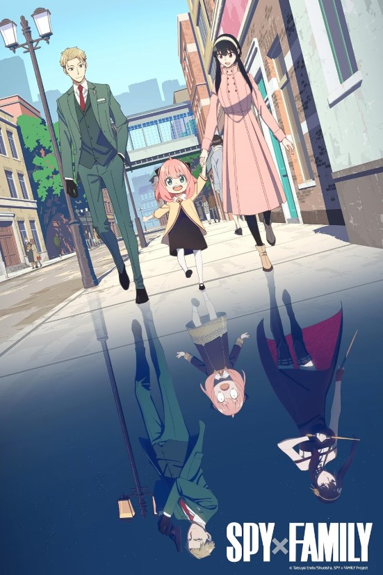
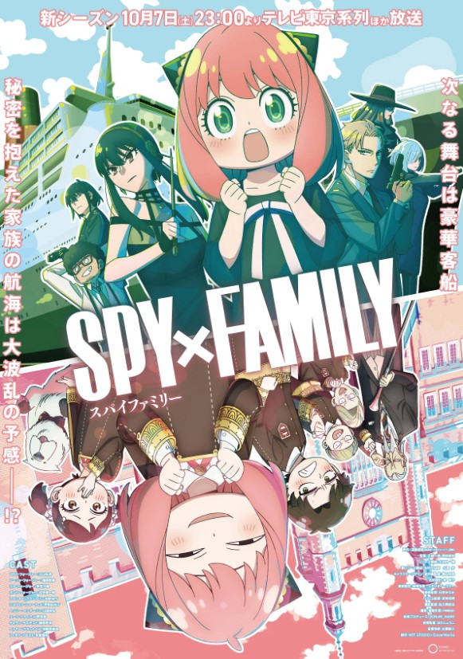
Spy X Family was my first anime. I got interested in this through a YouTuber's recommendation and I got really interested in its premise. Then found it later available free and legally on YouTube channel called Muse Asia. So I thought to give it a try. I started watching it on subtitles. At first the Japanese language felt unusual but I got used to it anyways, and this was definitely worth it. I loved every second of it and it was my first anime, as I am not interested in intense anime that much. This anime was wholesome feel good comedy anime. Here's the premise "Agent Twilight, the greatest spy of the nation of Westalis, assembles a fake family in order to infiltrate an elite private school, not realizing he recruited a psychic child and a legendary assassin also in need of a cover family.", pretty unique and awesome concept, isn't it? Anyways it got me really hooked just from the second episode. Plus the ending sequence or song called "Gen Hoshino Comedy" It was also my first favorite anime song. Like these lines "Shall we hold hands and head home? What should we eat tonight? 'Here's what happened today' This is what I wanted to talk to you about... any and everyday is a comedy with you", these lines... for me is nostalgic and a perfect representation of a child who feels loved. Anyways I really loved it a lot. It has overall 2 seasons so far. Season 3 will come around October 2025 so yeah I would definitely recommend it.
2. One Punch Man
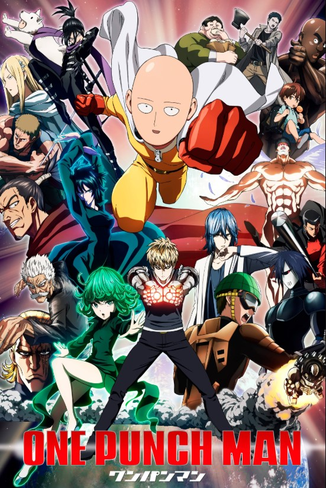
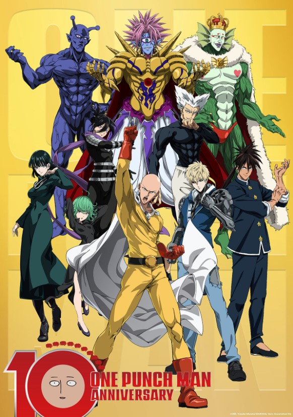
After watching Spy X Family ChatGpt recommened me this anime and I watched it, I liked it after 2
episodes but thought it is going to be an intense anime with very less humour even though I loved it's
humour I wanted to watch something feel good anime like my first anime Spy X Family so I went to
search for more good anime but didn't find any so I ended up watching this anime called One Punch Man
and I really LOVED this like everything felt perfect I even liked season 2 (I was new to anime) which
most people hate or doesn't like it lol but I loved everything. If you are interested in Superheros
and comedy you should definitely check it out.
3. Classroom Of The Elite
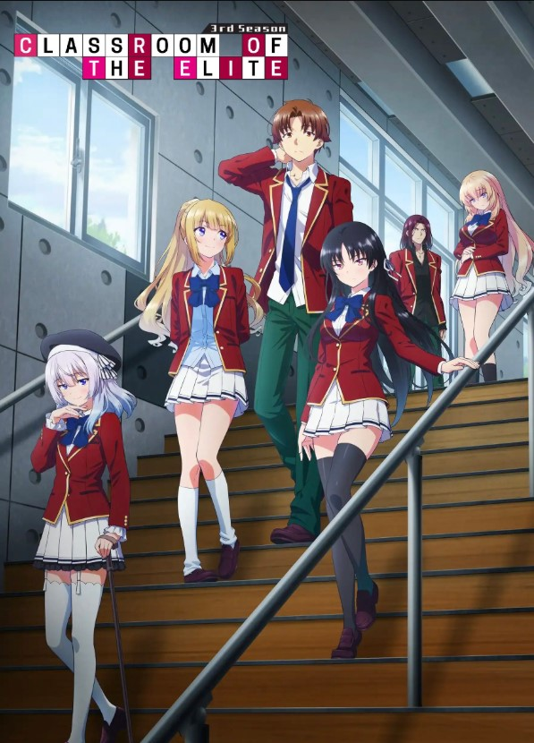
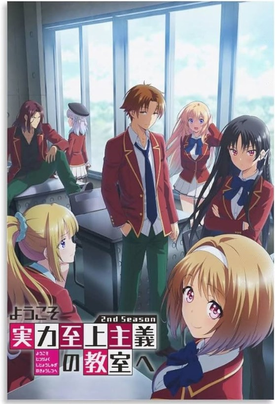
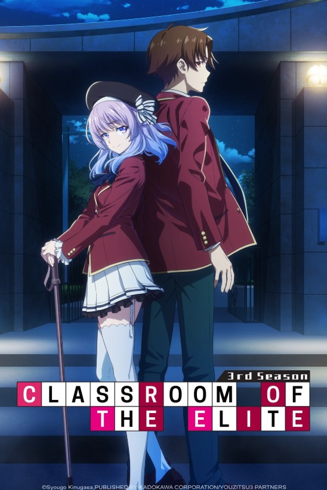
This was my third anime called Classroom of Elite. I really liked it especially the Season 1 though it
had lot's of fan services which were annoying, as I was watching them on TV and Thankfully didn't get
caught watching those scenes lol. I said I like it especially the season 1 cause only season 1 was
special, the season 2 and season 3 aren't even memorable, they are just time pass, if I had watched
them recently I might've said I love it but I watched it a while ago probably around 2024 september so
yeah it isn't like season 2 or 3 are just bad or something, it is that they with mediocre nothing else
and I would definitely recommend it if you are interested in high school drama stuff it is pretty
intense and fun journey.
4. Mob Psycho 100
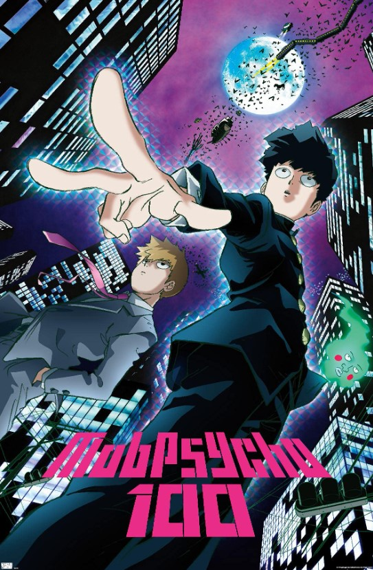
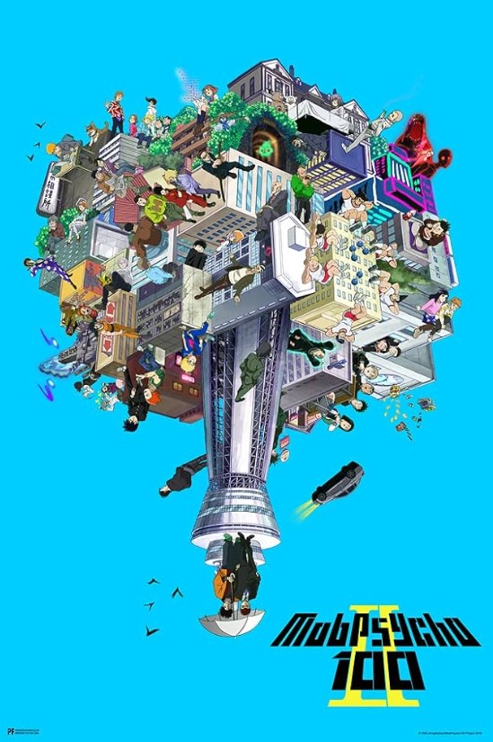
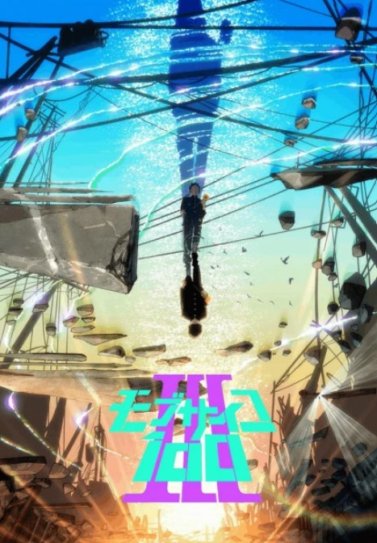
This was my fourth anime called Mob Psycho 100. And I.... really loved it. It is in my favourtie anime
of all time list like I even re-watched it 2 times. Anyways let's talk about it's story, it is
actually about that silent loser kid in your class whom no one acknowledge, he is actually very
powerful psychic who is afraid of himself as what if he accidently injured someone with his powers...
wait enough spoilers I think I would go on spoiling it if I talk about it anyways this anime is pretty
good, it is about self acceptance, self improvment, adolescence struggles and more on. I even love
it's all opening song. That one line from season 1 opening song "If everyone is not special...maybe
you can be
what you what to be.. surely surely you will find the answers" really hits hard, I think I watched it
at the right moment of my life that's why it has a special place in my heart. Anyways it has total 3
season and 37 episodes. Watch it if you are interested from my premise.
5. Tokyo Revengers (Season 1)
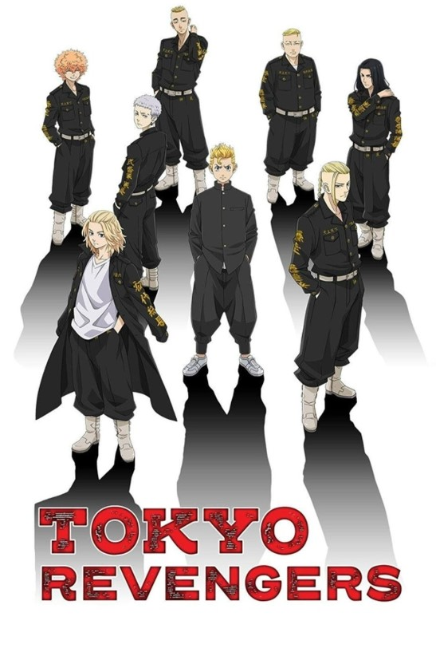
This anime for me is a PERFECT example of having a different and wrong
expectations.
This is my fifth anime called Tokyo Revengers, a friend of mine recommended me this anime, cause it is
his favourite he didn't tell anything about the premise so i googled it and found it is time travel
anime so i was like cool, it is probably a group of friends trying to do time travel to fix their
client's or customer's life or maybe their own I don't know then after a while i watched it I loved it watching in
that real time, but I was able to only watch the season 1 as it was available on YouTube Muse Asia channel
the anime was great experience (for me) but looking back this anime was definitely not my type. It had
lots of cliffhangers very slow pace and it was not about any time travel stuff just some intense dark gang
fights. The story is set in highschool. Season 1 ended with a cliffhanger, and I hated it because I
experienced lots of cliffhanger already throughout the season that the now it didn't matter and didn't
force me to watch season 2. I think season 2 and 3 might've been good or even great and feels like I
am missing something out but overall this anime is not my type I had different expectations around
time travel and was not interested in school teenager's delinquent gang fight. It was also very slow
and intense and as I said earlier I am not the type to watch something that intense anime so yeah if
you are interested you should watch just don't expect, it is mostly around time travel like I did.
6. Assassination Classroom
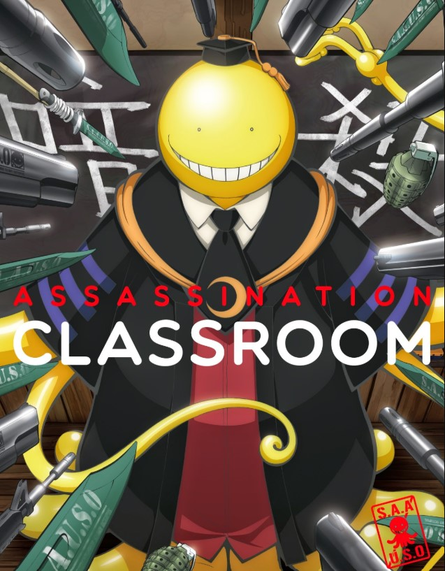
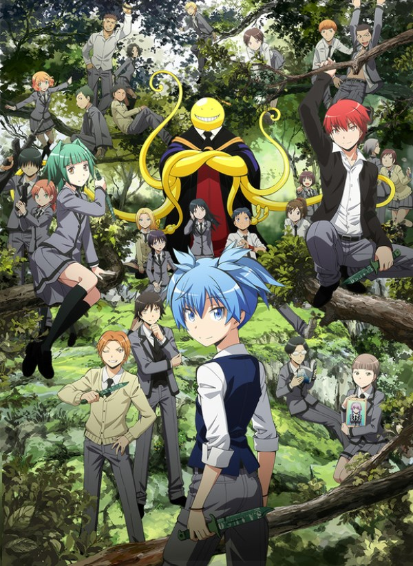
This is my sixth anime called Assassination Classroom. I started watching it randomly because it was
available free on YouTube and it's iMDb rating was also good. And I really loved it. The premise is
pretty unique; "A class of students is tasked with assassinating an alien that plans to destroy the
world in one year. In a strange turn of events, the creature also happens to be their new homeroom
teacher." The story is good and simple. It had lots of unique characters. It is mixed with a little
slice of life, comedy, emotional and hilarious moments which you would definitely love it if you
readily take it. This anime has total 47 episodes and 2 seasons. The story is complete, and if you’re
looking for something emotional yet hilarious with a unique concept? Give it a try.
7. Death Note
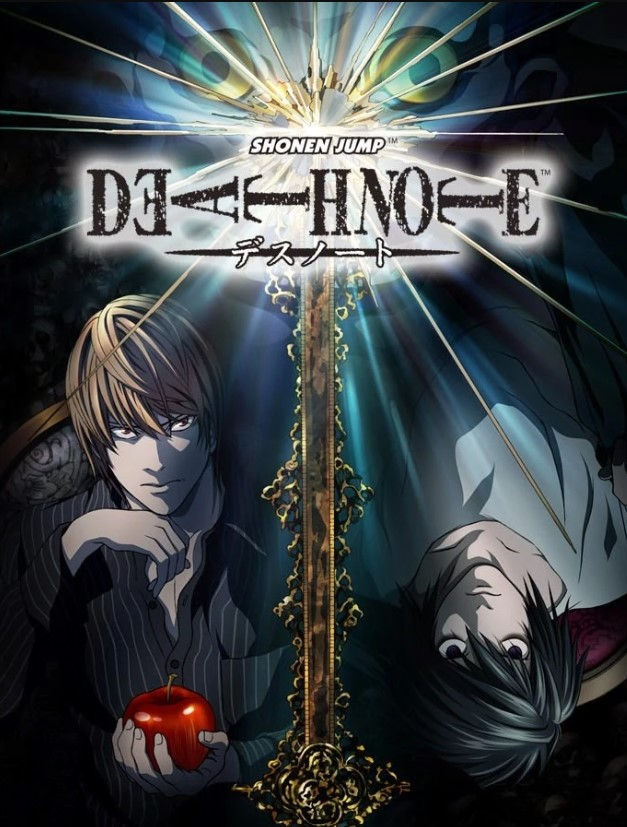
This was my seventh anime called Death Note. I think you might have already heard of it if you are interested in animes. Yeah, that's right as you know this is almost everyone's starter pack anime (except me as my first anime was Spy Family :) and I loved it a lot. This anime is an 18 years old classic anime. The premise is "A high-school student discovers a supernatural notebook that grants its user the ability to kill" that's it set any expectations, I don't care. It won't disappoint you (not sure though) but yeah the story is really good. It explores some serious things which normal people think and judge about very easily and emotionally instead of rationally, anywas I don't want to debate about that. Even if it’s not your type, give it a try. You might be surprised.
8. Attack On Titan
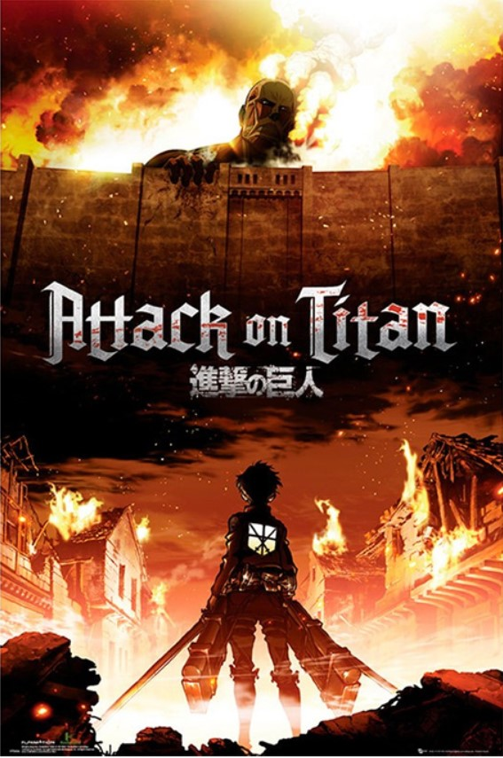
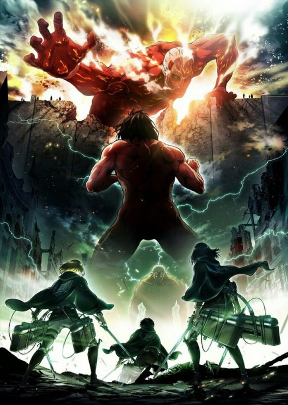
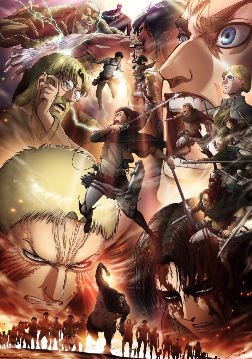
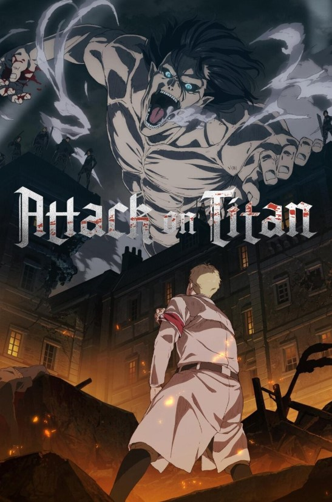
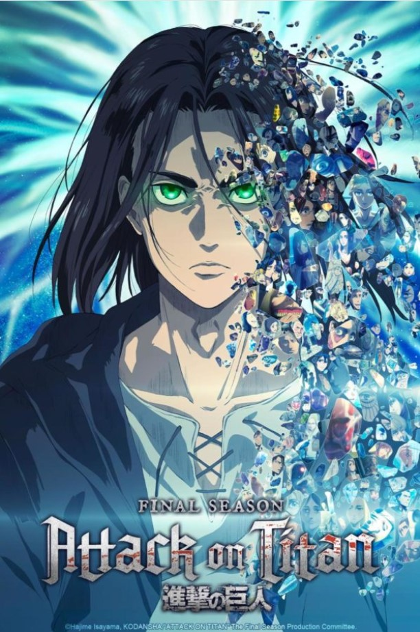
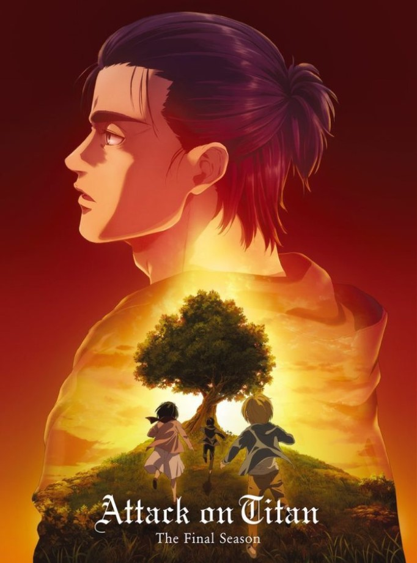
WARNING:I feel like I'm about to rant real hard about this one — so, sorry in advance if I sound like a crazy fan :)
This anime was not my type. Yeah it wasn't as I already said infinite times that I am not interested in intense or addictive anime but here it comes....... This was my eighth anime called Attack On Titan. What's comes first in your mind when you hear the title? Well for me I thought it is an sci-fi anime about humans planning to attack to the Saturn's largest moon called Titan. But the premise is actually " humanity is on the brink of extinction due to the existence of gigantic humanoid creatures that eat humans. To survive, the remnants of the human race have taken refuge behind enormous walls built to keep the creatures out." And yeah that's it. I was curious to watch it beacus it's IMDb rating is 9 out of 10 and lakhs of people voted it on from toxic fans to intellectual adults everyone were telling to watch it because it is once in a lifetime experience. I was like 'okay but I am still not interested in this show's story, and this is most probably just a hyped trend nothing else I shouldn't fall for it, I am unique haha' and I ignored for a while like I started watching anime in July 2024 and I watched Death Note from 23rd December and finished it by 31st morning now I re-watched some animes during lunch while I was thinking what should I watch next and Attack On Titan was on my watch list but I thought I am never going to watch this zombie type anime stuff but still I got curious and searched how much episodes and season it had? It has overall 94 episodes and 4 seasons. And searched if it had some weird fan services and scenes but to my surprise it had none so I could safely watch it safely on TV? YAYY, but it had lots of violence and still I was like I am not going to watch it but this thing caught my subconscious. Now this might sound like a made up story especially aot fan might understand this referance, so the whole night I was trapped in my dreams and kept dreaming about watching aot like I had watched from 6 to 7 episodes literally in my dream, to be clear I was actually just dreaming watching aot not actually watching the real episodes without watching it in real life lol. So the next day around breakfast I was thinking what should I watch or re-watch and Then... I finally started the first episode of it on um not so l***l webistes like I played it on my phone and then connected it to TV. And then I finished the whole Season 1 of 25 episodes in just 4 days and then finished the whole Attack On Titan from 1st Jan 2025 to 15th Jan, yep I admit I was addicited, watching from 6 to 8 episodes per day. And this finshing in 15 days might sound flex to you but trust me don't try to speedrun or try to watch it fast. I extremely regret it watching it that fast like why didn't someone warn me to watch and take it slow... my advice on this is that watch it slowly and nicely don't rush it like me you would also regret it like it has so much plot and moments that you might enjoy every moments if you watch it slow, anyways it is your choice and It is definitely once in a lifetime experience (for me). I guess time to wrap this up quick but before that I still wish I could wipe my memory and watch it again — it was just that special. This was in my favourite of all time list, my top 1 anime. I was planning to re-watch it after a while maybe in 6 months or so before re-watching it after 10 years I already set a little time capsule on my every accounts calenders to re-watch it after 10 years. And Good Luck if you are planning to watch it and Thanks for reading :).
9. Dandadan
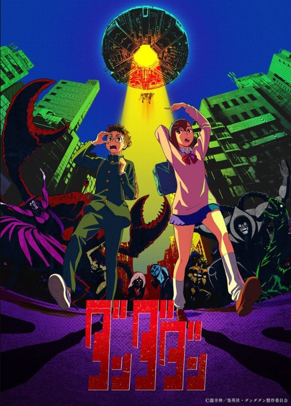
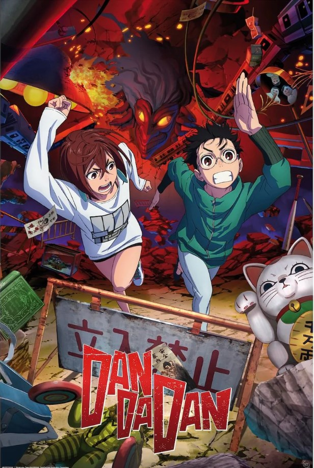
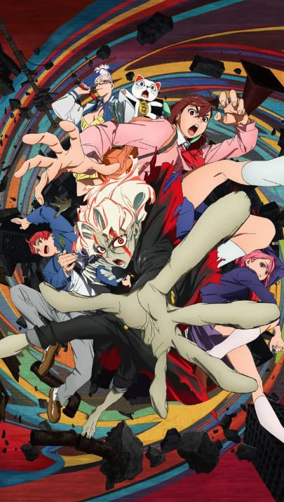
This was my ninth anime called Dandadan. This anime just recently came out in 2024 one of the most awaited and popular anime of 2024. And I heard good reviews of it and it was also available free and legally on YouTube so I was like why not let's try it and for me it was a perfect healer anime after watching something Intense anime like Attack On Titan. It is a fully chill hilarious and chaotic fun anime and this is the premise, "When Momo and Okarun's beliefs clash, they're thrown into a world of ghosts, aliens, and awakened powers.." but and let me add more by myself, "The main character's balls?....Already gone. The girl's clothes?..... Already off". Like literally it is so hilariously done without and with weird scenes. Nothing inappropriate is really shown — it doesn’t feel suggestive, just wild and funny in a chaotic way. Anyways it is mostly comedy with a pretty unique concept and story and the animation is also brilliantly done, the fluid and weird type animations reminded me of Mob Psycho 100 and One Punch Man. And I really liked it, it is a very good time pass plus healer anime (for me) so yeah, that's it and check it out if you want to see something goofy and fun.
10. Link Click (Season 1)
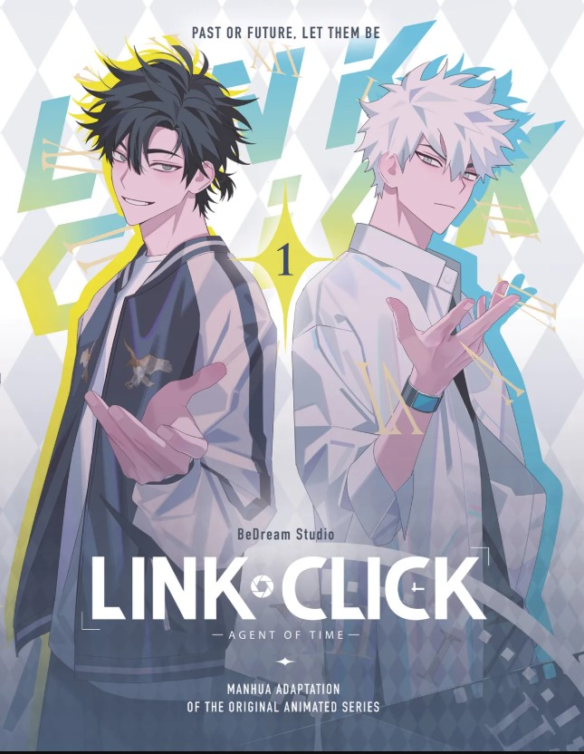
This was my tenth anime called Link Click. I actually heard about it in a podcast and got extremely interested in it's story because of the reviewer's appreciation to it as he called it masterpiece and then read the premise, which is "Using superpowers to enter their clientele's photos one by one, Cheng Xiaoshi and Lu Guang take their work seriously at Time Photo Studio.", but then I found it is actually Chinese anime or more precise Chinese Donghua, but let't call it anime. I am used to watching animes in subtitles not English or any other language dubs so I dropped the idea of watching it as I am not used to hearing Chinese and my ears won't be able to absorb it nicely and I won't feel emotions. But then while talking with a friend of mine about anime and stuff he randomly recommended me this anime and I was like I think I heard about it and asked if it is time travel stuff he said yeah and it is really good. Destiny forced me to watch it I guess, like what are the odds of me hearing about it recently and podcast and it is Chinese anime so it is not that mainstream anime and my friend also recommending it. So because of those two events of hearing it somewhere and friend recommendation I happened to watch it.
Then I planned to watch it the next day, but... I got fever that night lol. so the next day I was laying on my bed and watching Link Click in Chinese language almost heaven if fever didn't exist and I watched 5 episodes that day and I really loved it, though I had a little fever nightmare as I kept thinking about it :). Like each episodes it was something unique plus the Opening and Ending songs? I would definitely recommend to put them in your playlist even if you don't watch this. The opening song "Dive back in time" and "Overthink" are really great. This anime is a masterpiece and unique, I would definitely recommend it. As for why I only watched Season 1? well I loved it but it ended with a brutal cliffhanger, as you know I hate cliffhangers and I didn't like or know where this story was going. I wanted to remain in the comfort zone of season 1, and the real reason is I might miss the season 1 theme song lol. But I definitely planned to watch Season 2, I just need a little time but definitely watch it after a while for sure.
11. Frieren: Beyond Journey's End
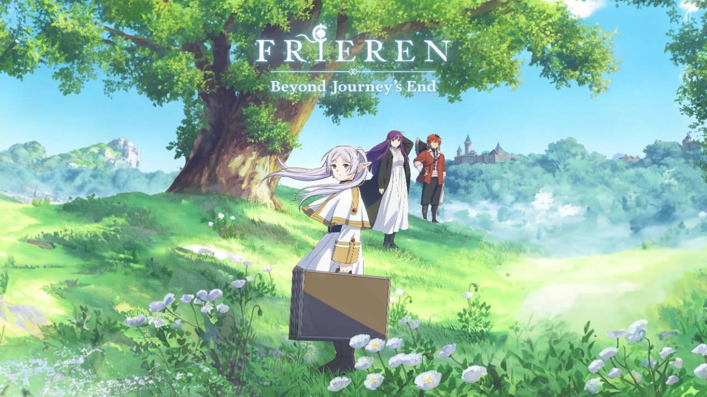
This anime?.... well I saw a good review about this a while ago and heard that it is really good while I didn't know anything about the story, all I knew was this was something serious, emotional, slow, relaxing, great, adventure type anime I didn't know it's theme, any goals, yep nothing and I randomly started it one day morning, didn't even how I got interested in it without researching about it's story and episodes, that's pretty rare for me anyways let's talk about it.
This is my eleventh anime called Frieren: Beyond Journey's End. It recently came out by the end of 2023. It has 28 episodes. And just like the reviewers said about it, it hit emotionally hard just in the first episode. It was confusing a little bit (for me) as I was not familiar with fantasy world and didn't even know what an elf is, anyways here's the premise, "An elf and her friends defeat a demon king in a great war but the war is over, and the elf must search for a new way of life.". I really loved this peaceful wholesomeness mixed with comedy yet thought provoking and beautiful anime. I would genuinely recommend it, you should definitely check it out.
Before ending here's a funny story about it before ending so I watched it on not so leg@l third party website, It kept lagging a bit, but I still watched it all the way through., like playing it on my phone first and then connecting to the TV and stuffs all the while it was available free and legally on Muse Asia YouTube channel, like it was my mistake for not researching and randomly watching it so yeah that sucked anyways.... well... that was an anime lesson for you today that like me you don't need to know an anime premise or story to enjoy it, you can start watching it randomly hehe But please do proper research if it is available free in your region before watching it on some ahem websites. Thanks for reading :).
12. Orb: On the Movements of the Earth
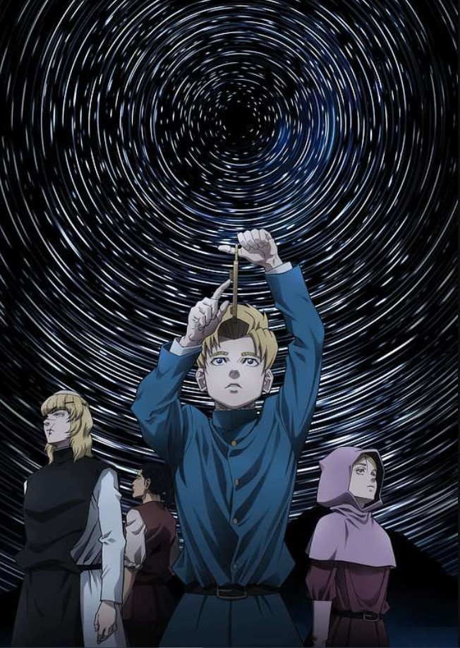
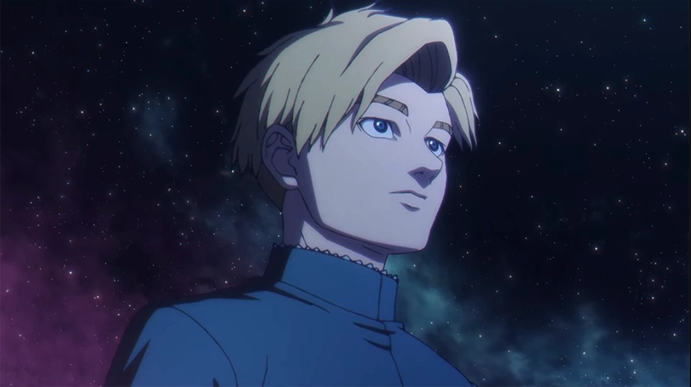
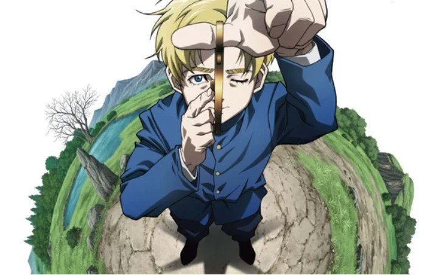
Okay so I heard about this anime in from reviews or somewhere else I don't remember like I only heard it is great and about the struggle some faced to prove their discoveries. That's it i didn't know what's the topic but i thought that the discovery would probably be around the speed of the earth rotation or normal speed of earth lol but it still didn't make me feel like to watch it until...well would you like to know how it got me curious? but before that here's actual premise of this anime "Set in 15th-century Europe, the series follows the perilous journeys of rebellious scholars who dare to challenge the Church’s staunch belief in the geocentric model. As the powerful clergy condemns heliocentrism as heresy, these brave minds risk excommunication, torture, and death to uncover the true structure of the cosmos.".
Actually I was studying about central science chemistry and in that, around the history section some people were mentioned like this guy found oxygen Robert or something I don't remember and this guy found this, that guy found that, just a few examples and besides their name there was birth year and death year in bracket, and It was kind of annoying as I started to wonder,.. no one will even memorize them, why's that necessary? I thought about it for a moment only to realize or find that their life actually mattered. They probably struggled to prove their discoveries and some even lived enough that their discoveries or theories gets proven a little bit or fully wrong by someone else, what would they have been gone through? While i have the privilege to just read and understand their whole life dedicated discoveries in just 1 sentence. So the birth year and death year gets written to honor them? I read this somewhere that "It’s easy to treat discoveries like checkpoints in a textbook: atoms? check. periodic table? check. But every one of those “checkpoints” was someone’s lifetime, full of doubt, ridicule, obsession, maybe even fear. And yeah—sometimes they were proven wrong later, but that doesn’t erase their struggle. It adds to the story, like layers of humanity built on top of each other."
This was my twelfth anime called Orb: On the Movements of the Earth. As I said earlier it is about trying to risk your life and goes against the church to prove heliocentrism or heliocentric model opposing to church's geocentric model. And to be honest I am speechless. It is extremely intense and complicated while I expected a normal and simple story. The anime just recently came out by the end of 2024 and finished around march 2025. The story is complete. It has 25 episodes. As for the anime the story is pure fictional from start to finish. It explored very less about the scientific struggle behind researching to prove heliocentric model. It focused more on trying to provoke your thoughts with deeper meanings. The whole anime is very much dialogue heavy with very less actions. It explored Hell, Heaven, God and many more lot's of different perspectives which I can't summarize here. Overall it is in my favorite anime of all time list. I definitely plan to rewatch it soon — again and again — to understand it more deeply. Watch this anime only if you are interested and Thank you so much for reading this far, really means a lot :).
 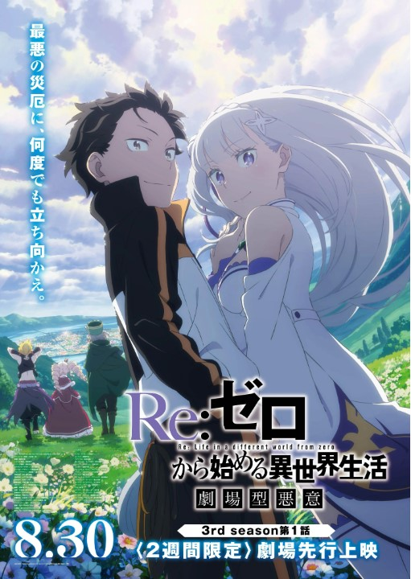
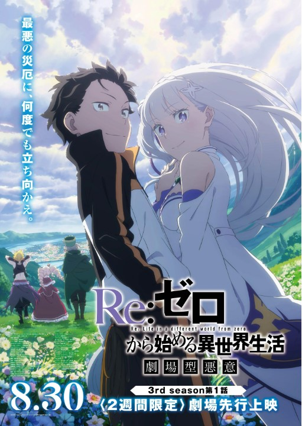